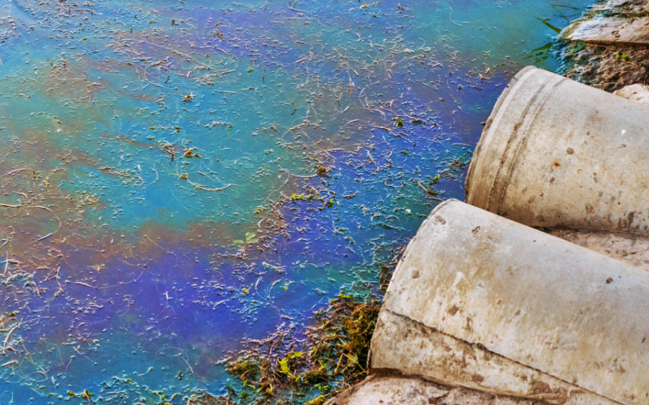
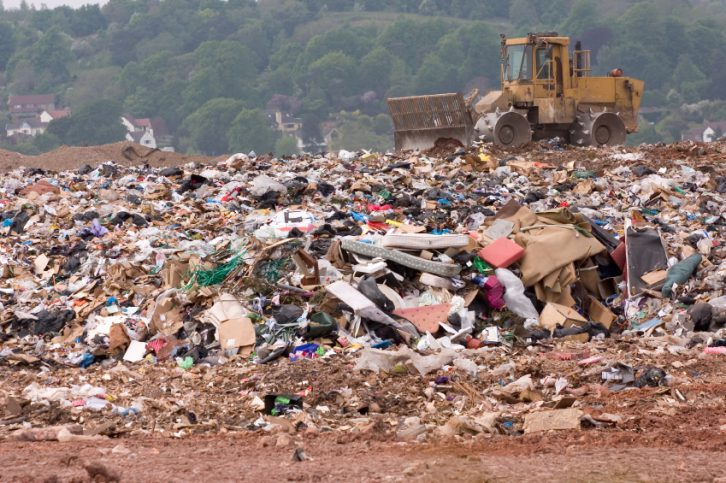
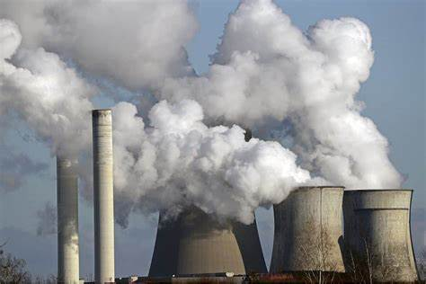
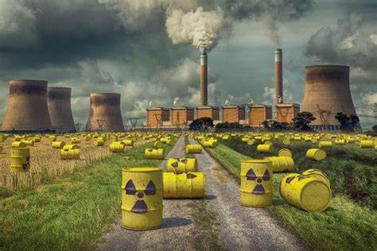
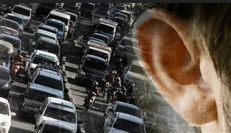
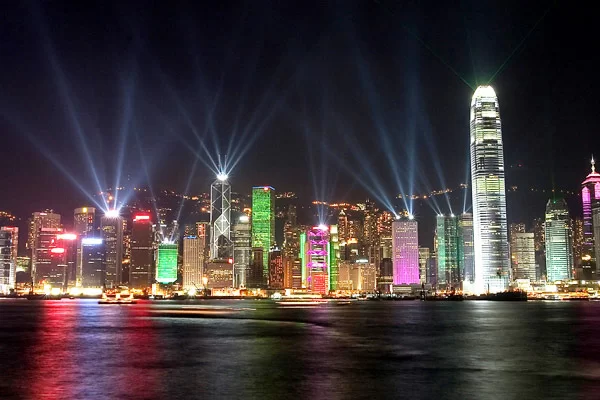
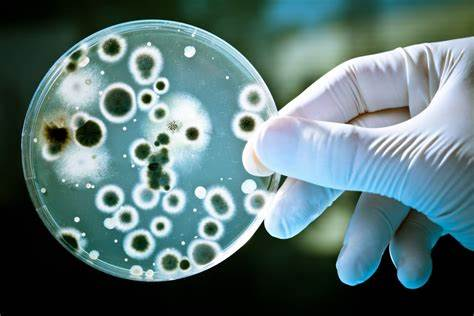
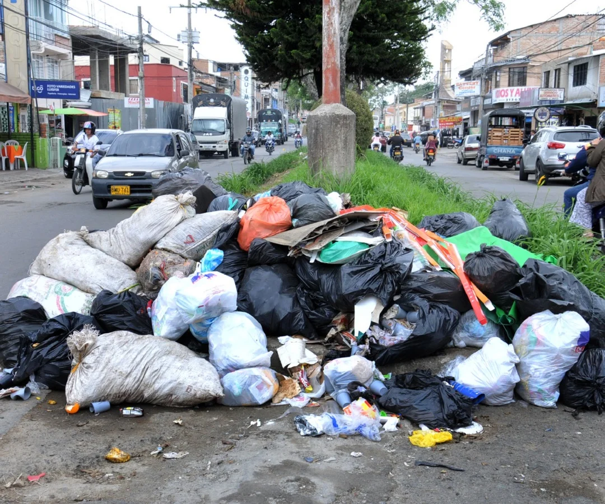
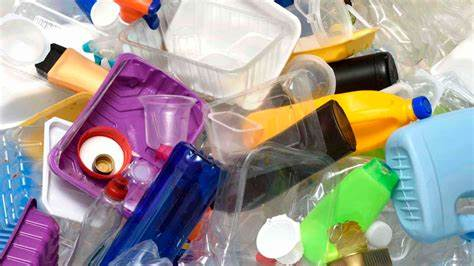

Los tipos de contaminación ambientales que podemos encontrar son:
Contaminación del agua
Este tipo de contaminación ambiental se produce cuando se introduce un agente contaminante que altera los diferentes cauces de agua. Esta contaminación afecta a las especies animales y vegetales que habitan en dichas aguas pero, además, según la Organización de las Naciones Unidas (ONU) en la actualidad 1 de cada 3 habitantes se ve perjudicado por esta contaminación.
Entre las causas de la contaminación ambiental que se da en el agua están: |
 |
Vertidos industriales: como insecticidas o plaguicidas que modifican los equilibrios químicos que provocan la muerte de miles de organismos acuáticos. También podemos hablar de los detergentes del lavado de ropa, que producen una eutrofización que bloquea el paso de la luz y oxígeno.
Vertido de aguas negras: como las aguas de zonas urbanas o industriales.
Vertidos de petróleo: causados por grandes petroleros y plataformas petrolíferas.
Desastres naturales: como inundaciones o huracanes, que mezclan el agua con sustancias nocivas.
Aumento de temperatura: debido al cambio climático y el sobrecalentamiento global la temperatura sube y el oxígeno del agua baja, por lo que se altera.
Contaminación del aire
Este tipo de contaminación ambiental altera la composición química y natural del aire, afectando a toda la vida que habita el planeta, especialmente a los animales.
Entre las causas de la contaminación del aire encontramos estas: |
 |
Gases expulsado por los motores de combustión.
Gases que liberan las industrias, como el dióxido de azufre o el monóxido de carbono.
Desastres naturales como los incendios, que liberan elevadas cantidades de dióxido de carbono.
Quema de materiales de desecho.
Procesos de obtención de energía, que liberan gases contaminantes.
Animales como las vacas.
Contaminación del suelo y del subsuelo
Entre los distintos tipos de contaminación ambiental también encontramos la contaminación del suelo, la cual se suele producir por el uso de sustancias químicas como
pesticidas, herbicidas o insecticidas, que afectan a la fertilidad del suelo.
Los principales afectados de esta contaminación son las plantas (e indirectamente, los animales), ya que son las que se nutren del los nutrientes del suelo. Además,
la ausencia de plantas conduce a la erosión del suelo, otro problema más que se añade en la zona en la que haya contaminación de los suelos. |
 |
Contaminación térmica
Este tipo de contaminación se produce como consecuencia de las modificaciones en el clima global, especialmente por un aumento de temperatura. Estas modificaciones se
producen de forma artificial por la emisión de gases o partículas, por lo tanto, está muy relacionada con la contaminación del aire.
Las causas pueden ser las industrias que liberan grandes cantidades de energía térmica o los motores de los automóviles, además de los mencionados gases. Este tipo de
contaminación conduce a grandes problemas ambientales y de salud. |
 |
Contaminación radiactiva
Este tipo de contaminación ambiental se produce por la liberación de sustancias con la capacidad de emitir residuos radiactivos al medio, como rayos beta. Entre las causas
pueden estar la liberación de residuos radiactivos de las centrales nucleares, daños en reactores nucleares o el uso de armas nucleares. Esta contaminación es muy perjudicial
para los seres vivos, ya que las sustancias radiactivas afectan al ADN directamente y producen graves malformaciones y mutaciones, entre ellas enfermedades. |
 |
Contaminación acústica
Este tipo de contaminación se produce como consecuencia del exceso de ruido que se da en las ciudades, sobre todo, por las actividades humanas como vehículos, construcciones o el
uso de maquinaria pesada. La contaminación acústica, no es un tipo de contaminación que afecte especialmente a la supervivencia de los seres vivos. No obstante, sí podemos decir
que la contaminación acústica sí afecta a los hábitos alimentarios y reproductivos, migraciones, produce problemas acústicos y problema de bienestar. |
 |
Contaminación lumínica
Aunque no lo parezca, se trata de uno de los tipos de contaminación más comunes, ya que se produce especialmente en las ciudades como consecuencia de las actividades humanas. Al igual
que la contaminación acústica no afecta excesivamente a la supervivencia, pero sí produce enfermedades oculares, dolores de cabeza, migrañas, afecta a hábitos alimentarios y reproductivos,
migraciones o bienestar en general. |
 |
Contaminación electromagnética
La contaminación electromagnética es un tipo de contaminación ambiental que se produce como consecuencia de la emisión de partículas electromagnéticas, emitidas principalmente por actividades
humanas como las actividades industriales. El hecho de estar rodeadores de smartphones, ordenadores y cada vez más tecnología implica que nos rodeamos de más ondas electromagnéticas y por lo
tanto nos exponemos al peligro.
La contaminación producida por electromagnetismo provoca enfermedades neurológicas y afecta a distintos hábitos de los seres vivos. Si bien, este tipo de contaminación y sus consecuencias aún genera un gran debate. |
|
Contaminación alimentaria
El consumo de productos, tanto naturales como procesados, es una de las principales formas con la que agentes tóxicos y contaminantes entran en nuestro organismo. Aunque a día de hoy hay muchos protocolos y
controles que buscan evitar que haya elementos tóxicos en los alimentos, la realidad es que el riesgo 0 nunca existe y, en consecuencia, se compromete la salud de animales y personas. |
|
Contaminación microbiológica
La contaminación por microbios o contaminación microbiológica se puede dar en cualquier medio: el suelo, el agua, los alimentos, etc. Sucede cuando organismos microscópicos invaden dicha zona de forma que la
dañan. Por ejemplo, puede darse contaminación microbiológica por: |
 |
bacterias.
Los virus.
Los protozoos.
Los hongos.
Los helmintos.
Los artrópodos.
Contaminación ambiental por basura
Una de las causas más notorias de la contaminación ambiental es la acumulación de basura de todo tipo en todo el mundo, en tierra y en océanos. La contaminación por basura se da por los residuos producidos por la actividad humana
que no son gestionados de forma correcta. Esto provoca la degradación del suelo, del agua, de la salud, etc. |
 |
Contaminación por plásticos
Debido al sobreconsumo de plásticos y a su mala gestión como residuos, aparece la contaminación por plásticos, tanto grandes como microscópicos (los microplásticos). Esta contaminación afecta a todo el medio ambiente, la hay en la
tierra, en el agua y en la salud de los organismos, incluida nuestra salud. |
 |